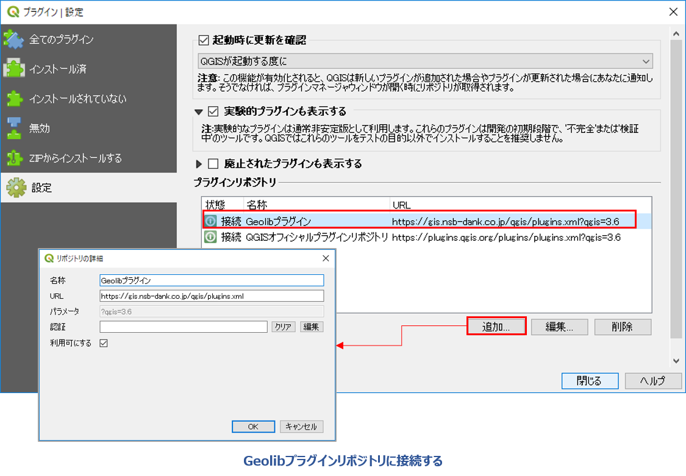
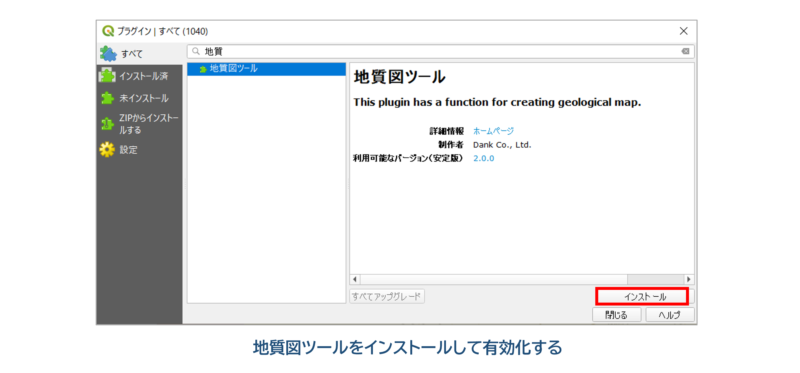

II. 地質図リツールプラグインの導入・設定
「地質図ツール」プラグインがインストールされている場合は、メニューバーに「地質図ツール」メニューおよびツールバーが表示されます。
ここから「地質図ツール」を使用できます。
1. プラグインのインストール
メニューに「地質図ツール」メニューが表示されていない場合は、プラグインのインストールがされていませんので、以下の方法でインストールを行います。
「地質図ツール」プラグインは、実験的なプラグインで公式プラグインではないため、下記のように専用リポジトリまたはZIPファイルアーカイブからインストールします。
専用リポジトリからのプラグインのインストール手順は以下の通りです。
① QGISを起動して、 [プラグイン]-[プラグインの管理とインストール...] をクリックします。
② 「 設定」タブをクリックして「プラグインリポジトリ」に地学ライブラリツールプラグインのリポジトリを以下のように設定して接続します。
* 名称：「Geolibプラグイン」と入力
* URL：「https://gis.nsb-dank.co.jp/qgis/plugins.xml」

③ 「全てのプラグイン」または「インストールされていない」タブで、「地質図ツール」を選択して [インストール] をクリックしてプラグインをインストールします。

プラグイン管理ダイアログで、プラグイン名の右のチェックがついているものは、現在のQGIS上で動作しているプラグインです。
インストール済のプラグインの一覧からチェックのON、OFFを行うことで、現在動作しているQGIS上でのプラグインの動作を制御することができます。
2. プラグインのアップデート
プラグインの新しいバージョンがリリースされている場合は、プラグイン管理ダイアログで 「アップグレード可能]タブが表示されます。
アップグレードを行うプラグインを選択して [プラグインをアップグレード] ボタンをクリックすると、選択したプラグインがアップグレードされます。
QGISのインストール環境によってプラグインのインストール先や、後述するオプション設定を記録したファイルのパスが異なります。
公式サイトからダウンロードしてWindows PCのハードディスクにQGISをインストールした場合は、プラグインパスは
「C:\Users(ユーザー名)\AppData\Roaming\QGIS\QGIS3\profiles\default\python\」
のようにユーザーフォルダの配下になります。
ポータブルタイプ（USB等の外部メモリから起動できるようにしたもの）のQGISの場合は、
「(USBメモリのQGISフォルダ)\qgisconfig\profiles\default\python\plugins」
のように、USBメモリ内にプラグインがインストールされるように設定されます。
設定したパスを確認したい場合は、メニューバー [設定]-[ユーザープロファイル]-[アクティブなプロファイルフォルダを開く] で確認することができます。